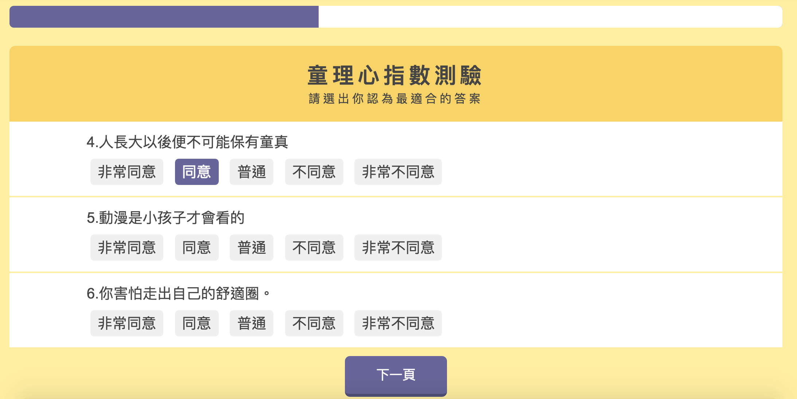
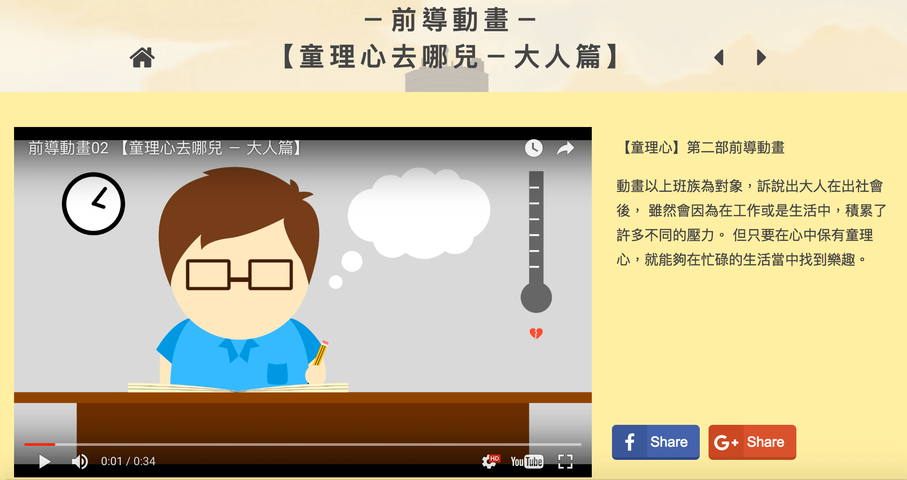

在大學畢業製作小組中，我擔任主視覺與網站的設計，而這我第一個獨自完成製作的完整網站，當中包含活動記錄、影片觀賞與心理測驗等功能項目，是一個綜合宣傳小組理念與小組行動紀錄的網站。
主視覺以黃昏的城市作主調，以表達出童心與社會化之間的界線。以手繪動畫以及motion graphic，帶領瀏覽者瞭解童心與社會化之間的關係，並以心理測驗供瀏覽者遊玩和參考。
由於作為第一個網站，當時未有清晰的前後端概念，故此資料的填充都在網頁的前端撰寫中加入，頗費時失事。 但對於網頁的排版，RWD概念與javascript的技術皆有很大的收穫。
𠂆心理測驗
 𠂆影片欣賞
